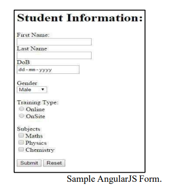
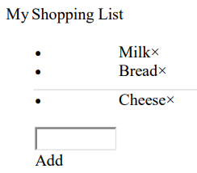
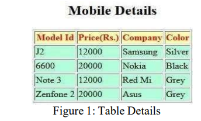

FULL STACK WEB DEVELOPMENT LAB
TASK 1:
Develop a website by implementing JavaScript functions for the following problems: Parameter: A string Output: The position in the string of the left-most vowel Parameter: A number Output: The number with its digits in the reverse order
TASK 2:
Write a JavaScript program to calculate the squares and cubes of the numbers from 0 to 10 and outputs HTML text that displays the resulting values in an HTML table format.
TASK 3:
Write a JavaScript program to display text “TEXT-GROWING” with increasing font size in the interval of 100ms in RED COLOR, when the font size reaches 50pt it displays “TEXT-SHRINKING” in BLUE color. Then the font size decreases to 5pt.
TASK 4:
Write a JavaScript program to design a simple calculator to perform the following operations: sum, product, difference and quotient
TASK 5:
Write a JQuery AJAX program to request data from the server with an HTTP.
TASK 6:
Create following Student Information form with submit and reset functionality using Angular JS.

TASK 7:
Use AngularJS features to make a shopping list, where you can add or remove items as shown below.

TASK 8:
Write a Servlet Program that accepts the Mobile phone details from user and displays the details on the next page. Create a table and perform insert operation as shown in the Figure 1 below. Connect using JDBC to display each record at a time on the webpage using servlet request and response.

TASK 9:
Develop a JSP Program to validate a particular user login based on the username password stored in the database and display a welcome page.
TASK 10:
Write PHP programs to do the following tasks:
a. Implement simple calculator operations.
b. Find the transpose of a matrix.
c. Multiplication of two matrices.
d. Addition of two matrices.
TASK 11:
Write a PHP program named states.py that declares a variable states with value "Mississippi Alabama Texas Massachusetts Kansas". Write a PHP program that does the following:
a. Search for a word in variable states that ends in xas. Store this word in element 0 of a list named states List.
b. Search for a word in states that begins with k and ends in s. Perform a case insensitive comparison. [Note: Passing re.Ias a second parameter to method compile performs a case-insensitive comparison.] Store this word in element1 ofstates List.
c. Search for a word in states that begins with M and ends in s. Store this word in element 2 of the list.
d. Search for a word in states that ends in a. Store this word in element 3 of the list.
TASK 12:
Write a PHP program to sort the student records which are stored in the database using selection sort.